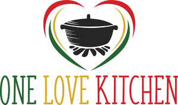
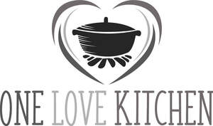

Trade Mark Journal No.2025/042 17 October 2025
UK00004174956 17 March 2025 (29,30,35,43)
Mark 1

Mark 2

- Class 29
- Ready cooked meals consisting wholly or substantially wholly of game, poultry, meat, and vegetables; Prepared dishes consisting primarily of fishcakes, vegetables, and broth (oden); Cooked meals consisting principally of seafood; Ready cooked meals consisting primarily of chicken, duck, and turkey; Prepared meals consisting primarily of meat substitutes; Prepared vegetable dishes; canned seafood; canned meat; canned vegetables; canned cooked meat; meat-based snack foods; vegetable-based snack foods; canned soups; canned fruits.
- Class 30
- Sauces; savoury sauces used as condiments; savoury sauces, chutneys and pastes; cooking sauces; ready-made sauces; salts, seasonings, flavourings and condiments; canned sauces; dried herbs; rubs [as a seasoning for food]; spices; marinades; seasoning mixes; none of the aforesaid being coffee flavoured sauces, coffee based sauces.
- Class 35
- Retail and wholesale services relating to food; operating and providing on-line marketplace for buyers of goods and services; the bringing together, for the benefit of others, of a variety of food products, enabling customers to conveniently view and purchase these goods in a general store, through a television shopping channel, through a general merchandise catalogue, by mail order or by means of telecommunications, or from a general merchandise Internet web site; online retail services connected with the sale of a variety of food products; none of the aforesaid being retail and wholesale services relating to coffee or coffee flavoured products.
- Class 43
- Hospitality services [food and drink]; corporate hospitality (provision of food and drink); consultancy services in the field of food and drink catering; food and drink catering for banquets; food preparation services; providing of food and drink; cafeteria services; canteen services; catering services; snack food services; restaurant and self-service restaurant services; ordering and take away services relating to food and drink through an on-line computer network; providing information about the provision of food and drink.
One Love Kitchen Limited
Representative: IPTogether Limited